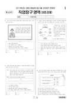

문제지


시험지를 먼저 풀어 보세요. 등급컷·표준점수·난이도는 흐리게 가려 뒀어요.
정답 변경 없음
이의신청 1문항 · 평가원 상세 답변 1문항
이의 요지
이의신청하신 <보기> 답지의 르. 해외의 자원 조달 및 수출 시장 확보를 목적으로 한다
평가원 답변
본 문항은 해외 시장 진입 방식을 이해하는 능력을 평가하는 문항입니다. 해외 시장 진입 전략유형에는 수출 방식(간접수출, 간접수출)에 의한 진입과 계약 방식(라이선싱, 프랜차이징, 계약생산,관리계약, 턴키계약. 307 방식), 그리고 해외 직접 투자 전략(자원 조달형 투자, 현지시장 접근형 투자, 해외 시장 거점형 투자, 선진 기술 습득형 투자, 수직적 해외 직접 투자, 수평적 해외 직접 투자)이 있습니다(근거 자료: 신황호외 2인 두산출판사 6.220, 이기호외 2인 세계문화사 6.181, 이영호 외 2인 교학사 0.203, 김홍대 형설출판사 0.215와 6.218, 808 수능 04066 상업경제 0.153 등). 제시문에나타난 계약 방식에 의한 해외 진출은 기술이나 지식을 해외로 이전하는 방식으로 즉, 자사가 가지고 있는 기술이나 지식을 해외의 외국 기업체에 일정한 대가를 받고 이전하는 장기 계약을 체결하는 방식 중 하나인 807 방식에 대한 문항입니다. 307 방식에 관한 개념은 공장이나 설비를설치한 후 일정한 기간 동안 운영하고 발주자에게 이양하는 방식으로 규정하고 있습니다.(근거 자료 : 이영호외 2인 교학사 6.203, 888 수능 (210166 상업경제 ㅁ.153) 따라서 제시문에 나타난 820ㅠ방식은 도로ㆍ항만ㆍ교량 등을 건조한 시공사가 일정기간 이를 운영하여 투자비를 회수한 뒤 주문자에 넘겨주는 방식을 말하는 것으로서, 진출 대상국 정부나 혹은 상대 기업의 요청에 의해 특정 산업분야에서 이루어지는 해외 계약 방식에 의한 해외 진출 방식입니다.이의신청하신 <보기> 답지의 르. 해외의 자원 조달 및 수출 시장 확보를 목적으로 한다. 라는선택지의 해외의 자원 조달의 경우에는 계약 방식에 의한 해외 진출 방법이라고 할 수 없으며, 해외 직접 투자 유형 중 하나의 형태인 자원 조달형 투자(자연 자원 지향형 해외 직접 투자로써 광업, 임업, 수산업 부문의 해외 직접 투자에서 나타나는 유형으로 주로 개발도상국을 중심으로 한자원 편중 현상으로 인하여 선진 국가의 기업들이 자원의 안정적인 공급을 목적으로 이루어지는투자.) 방식 목적에 가깝다고 할 수 있습니다. 또한 이의신청 사례로 제시하신 포스코의 경우에도1(0)[를 추진하면서 자원 개발과 연계한다는 것이지, 307'자체가 자원 개발의 목적을 가지고 있지는 않습니다. 아래에 제시된 참고 자료의 밑줄 친 부분에서도 알 수 있듯이, 807방식 자체가 자원개발 목적이 있는 것이 아니라, 30사엽을 추진하면서 이 사업과 연계해 자원 개발을 진행한다는것을 알 수 있습니다. 따라서 207”방식을 추진하는 본래의 목적에는 자원 개발이 포함되지 않으므로 본 문항의 정답에는 오류가 없습니다.[참고 자료 (헤럴드 경제, 2010년 3월 30일자)]포스코그룹이 세계적 자원부국 콩고민주공화국의 유일한 항구인 바나나항 개발 사업 참여를 검토 중이다. 24일 포스코그룹 관계자에 따르면 최근 포스코건설이 국토해양부 등 우리나라 정부 관계자와 함께 콩고를 일주일 일정으로 방문해 현지 바나나항 개발과 관련한 사업 타당성을 검토했다. 이번 방문에는 포스코건설뿐만 아니라 68건설 관계자도 동행했으며, 현지 콩고 정부 관계자와 만나 다각적인 검토 작업을 진행한 것으로 알려졌다. 포스코그룹이 이번 사업에 관심을 보이는것은 지난 5월 국토해양부가 콩고 재건부와 체결한 양해각서(401)에 따라 바나나항 개발을 현지자원 개발과 연계해 진행하기로 했기 때문이다. 당시 양국 정부는 개발협력 대상을 대서양에 접한콩고민주공화국의 바나나항으로 정하고, 약 5000억원을 투입해 일반부두 3선석과 컨테이너부두 2선석 및 항로준설 사업을 추진키로 했다. 또 사업 참여에 따른 수익사업은 수익형 민자사업(307':2410- (00636 - 1ㅠ8091617) 방식으로 추진하며, 비수익 사업은 콩고 정부의 협력에 따라 코발트와 구리 등 자원 개발과 연계한 패키지 딜로 진행하기로 했다.
스캔 원문을 글자로 옮긴 것이라 오탈자가 있을 수 있어요.
발행 기관: 한국교육과정평가원(KICE). 파일 위치: 이 사이트가 보관한 사본. 저작권은 발행 기관에 있습니다. 원본과 다르거나 게시 중단이 필요하면 연락처로 알려 주세요. 등급컷 출처 구분은 데이터 원칙에서 설명합니다.